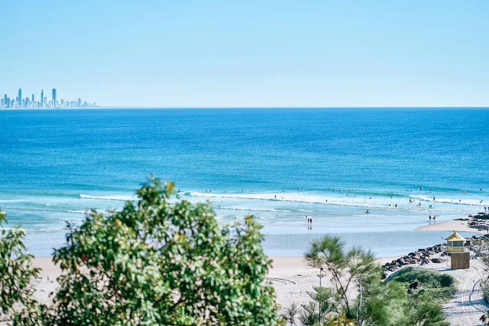

A Gold Coast pool project may involve custom design, concrete construction, infinity edges, luxury features, plunge pools or renovation work. Building approval comes before digging, and the pool barrier must comply before the pool is filled to 300 mm or more. Compare quotes using the same written scope, check that the licence covers the contracted work, and require a written, dated contract before starting work above $3,300.
For homeowners comparing pool builders gold coast options, the practical decision is how the design, site conditions, approvals and surrounding outdoor living areas will work together.
Pool Builders Gold Coast Explained
Pool Builders Gold Coast describes several ways to approach a new or existing pool, including custom design, in-situ concrete, infinity edge, luxury, plunge and renovation work. The right starting point is the block, not a catalogue shape. Note the available yard, likely access route, desired placement and whether the pool needs to sit beside other outdoor living elements such as paving, shade, glass fencing or landscaping.
Ground and access can change the questions you need answered. A beachside lot, a canal property and a sloping hinterland block may require different discussion around excavation, engineering, retaining, drainage, machinery and spoil handling. Ask for examples of completed pools on similar ground, such as Palm Beach or Tallai, rather than relying only on a polished image.
For a narrower comparison of construction choices, see this concrete pool planning guide. It can help separate decisions about the shell from decisions about the site and finishes.
Match the pool type to the site question
Each option creates a different design conversation. A bespoke concrete pool can be shaped around the block, with placement, engineering and approval considered together. An infinity or wet-edge pool needs particular attention to the view, slope or waterfront setting. A plunge pool may suit a small, townhouse or narrow-access yard, while a renovation focuses on updating an existing concrete pool with finishes, coping, tiles, lighting or equipment.
| Option | Useful when | Questions to ask |
|---|---|---|
| Custom concrete | The layout needs to follow the block | How will shape, excavation and engineering be coordinated? |
| Infinity edge | The site has a view, slope or waterfront outlook | What site conditions and edge details are included? |
| Plunge pool | The yard is compact or access is narrow | How will access, equipment and surrounding space be handled? |
| Pool renovation | An existing concrete pool needs modernising | Which finishes, coping, lighting and equipment are included? |
Luxury features such as spas, water features, heating, automation and lighting should be planned and budgeted as part of the whole project. Ask whether each inclusion is specified in the quote, where it will be installed and what work is excluded.
Treat approvals and barriers as project stages
The published guidance states that building approval comes before any digging. It also states that the pool barrier must be compliant before the pool is filled to 300 mm or more. These are not details to leave until the final clean-up. Ask who is responsible for the approval process, which documents are needed and when the barrier will be inspected or completed.
Put the sequence in writing before work begins: design, engineering where required, approval, excavation, construction, finishes, barrier work and handover. The exact order may depend on the project, so the useful question is what must be complete before the next stage can start. If the proposal includes glass fencing, paving, landscaping or lighting, make clear whether those items sit inside the pool contract or require separate arrangements.
Licensed and insured builders are presented as an important selection check. Confirm that the licence held by the builder covers the pool work in the contract, and ask for evidence of the insurance relevant to the proposed work. Keep copies of the quote, contract, approval documents and agreed changes.
Compare quotes using the same written scope
A free quote is useful only when the inclusions can be compared. Ask each builder to price the same basic brief, including pool type, dimensions, access assumptions, excavation, engineering, finishes, equipment, barrier work and associated outdoor areas. A lower total may reflect omitted site work rather than a cheaper equivalent design.
- Ask how excavation, rock, retaining, drainage and spoil removal are treated.
- Confirm the assumptions about access, machinery and working space.
- List finishes, coping, tiles, lighting, heating, automation and water features separately.
- Identify allowances, exclusions and the process for approving changes.
- Ask who supervises the site and how weather-related rescheduling will be communicated.
The Gold Coast guidance notes that summer storms can pause digging and concrete stages. That makes a named site contact and a clear update process useful questions before signing, especially where excavation or concrete work is planned around a preferred swimming season.
Who this guide applies to
This guide is for Gold Coast homeowners considering a new custom, concrete, infinity edge, luxury or plunge pool, and for owners deciding whether to renovate an existing concrete pool. It is also relevant to people comparing projects across beachside lots, canal properties, compact yards and sloping blocks in suburbs including Burleigh Waters, Robina, Mudgeeraba, Hope Island, Benowa, Mermaid Waters, Varsity Lakes, Helensvale, Currumbin Waters, Tallai, Ashmore, Merrimac and Palm Beach.
It is not a substitute for a site assessment, design, approval advice or a contract review. Before committing, describe the property area, preferred pool type, timing and site notes, then ask the builder to explain the assumptions behind the quote. If a sketch or inspiration image is available, it can clarify the intended shape, although the guidance says plans are not required to begin the conversation.
- Choose a project direction. Decide whether the brief is for a custom, concrete, infinity edge, luxury, plunge or renovation project.
- Record the site constraints. Note access, slope, waterfront or canal setting, available yard and any surrounding outdoor living work.
- Request comparable quotes. Give builders the same written brief and ask them to separate inclusions, allowances and exclusions.
- Check approval and licence details. Confirm the approval sequence, barrier responsibilities and that the builder's licence covers the contracted pool work.
- Review before signing. Check the scope, changes and contract details, and for work above $3,300 start only after both parties sign a written, dated contract.
| Decision area | What to compare | Useful evidence |
|---|---|---|
| Design | Shape, placement and intended features | A written brief or sketch |
| Site | Access, excavation, slope and drainage | Similar completed projects |
| Compliance | Approval sequence and barrier completion | Named responsibilities and documents |
| Contract | Scope, exclusions and changes | Written, dated contract |
Common questions
When should building approval be addressed? The published guidance says building approval comes before any digging. Ask who handles the process and what must be documented before excavation starts.
When must the pool barrier be compliant? The guidance states that the barrier must be compliant before the pool is filled to 300 mm or more. Confirm who supplies, installs and checks the barrier.
What should be compared in Gold Coast pool quotes? Compare the same written scope, including access, excavation, engineering, finishes, equipment, barrier work and exclusions. Site conditions can make retaining, drainage or spoil handling significant differences.
Are plans needed before making an enquiry? No. The guidance says a rough idea, suburb, preferred timing and site notes are enough to begin, while a sketch or inspiration photo is optional.
This guide covers pool design choices, Gold Coast site questions, approvals, barriers, quote comparison and contract checks.